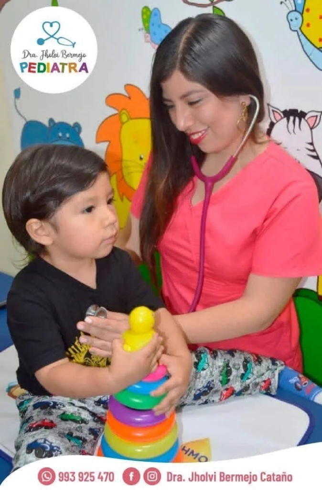
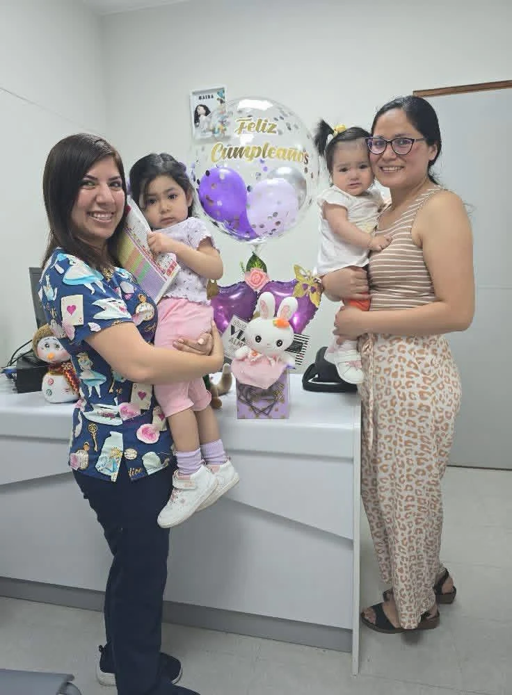
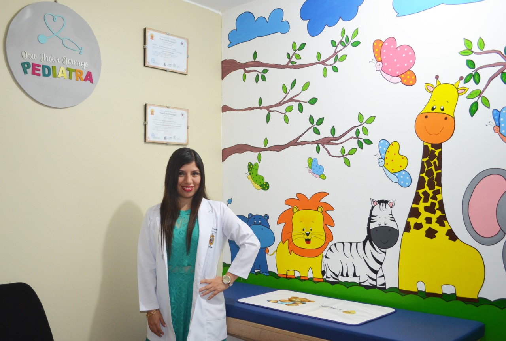

Atención pediátrica
Con cercanía y orientación a la familia
Médico Pediatra · CMP 77339 · RNE 42716
Acompañando el crecimiento y desarrollo de tu hijo en cada etapa.
Atención pediátrica cercana para recién nacidos, lactantes, niños y adolescentes, con orientación clara para madres, padres y cuidadores.
Formación en pediatría, neonatología y actualización continua para acompañar las distintas necesidades de cada etapa.

Consulta, prevención y seguimiento con recomendaciones adaptadas a la edad y a las necesidades de cada paciente.
Seguimiento del crecimiento, evaluación física, desarrollo y orientación para la familia.
Consulta presencial para recién nacidos, lactantes, niños y adolescentes.
Orientación en Pediatría y Neonatología mediante consulta virtual coordinada previamente.
Orientación sobre vacunas pediátricas y coordinación de atención según edad y disponibilidad.
Recomendaciones generales de alimentación dentro del seguimiento pediátrico.
Revisión de hitos del desarrollo y orientación a madres, padres y cuidadores.
Evaluación clínica de molestias y enfermedades frecuentes durante la infancia.
Los controles cambian a medida que el niño crece. La consulta se adapta a la etapa y al motivo de atención.
Seguimiento de peso y crecimiento, alimentación, antecedentes perinatales, signos de alarma y orientación práctica para los primeros cuidados en casa.
Control periódico del crecimiento y desarrollo, revisión de hitos, orientación sobre alimentación y seguimiento del esquema de vacunación.
Evaluación del crecimiento, hábitos, vacunación, desarrollo y atención de enfermedades frecuentes de la infancia.
Seguimiento del crecimiento y desarrollo, hábitos de salud, vacunas pendientes y orientación de acuerdo con las necesidades de la adolescencia.

Acompañamiento a la familiaDurante el control se revisan los principales aspectos del crecimiento y desarrollo, y se brindan indicaciones claras para continuar el seguimiento en casa.
Un vistazo al acompañamiento en consulta y a los espacios pensados para brindar una atención cercana a niños y familias.
Consulta la información compartida por la doctora y confirma por WhatsApp la disponibilidad, indicación y precio vigente antes de acudir.
Importante: la indicación de vacunas debe individualizarse según edad, antecedentes y evaluación. Los precios mostrados en el material proporcionado pueden cambiar.
Elige la sede más conveniente y coordina previamente la disponibilidad por WhatsApp.
Av. Brasil 2730 - Consultorio 1321, Edificio Qualis.
Horarios: previa coordinación por WhatsApp.

Los OlivosC. 3 Mz. J - Lt. 37, Urb. Santa Elisa II Etapa, Los Olivos, 2do piso.
Horarios: previa coordinación por WhatsApp.
Cada niño tiene necesidades diferentes. Cuando la situación lo requiere, se puede recomendar evaluación o acompañamiento de otros profesionales.
Evaluación y seguimiento del desarrollo neurológico infantil.
Evaluación y manejo de alteraciones hormonales y del crecimiento.
Evaluación y tratamiento de enfermedades respiratorias infantiles.
Evaluación y manejo de trastornos digestivos y nutricionales.
Evaluación y seguimiento de enfermedades renales y urinarias.
Evaluación especializada y seguimiento de enfermedades oncológicas infantiles.
Evaluación nutricional pediátrica, consejería alimentación saludable y orientación personalizada para cada etapa.
Escríbenos por WhatsApp para coordinar sede, modalidad y disponibilidad.